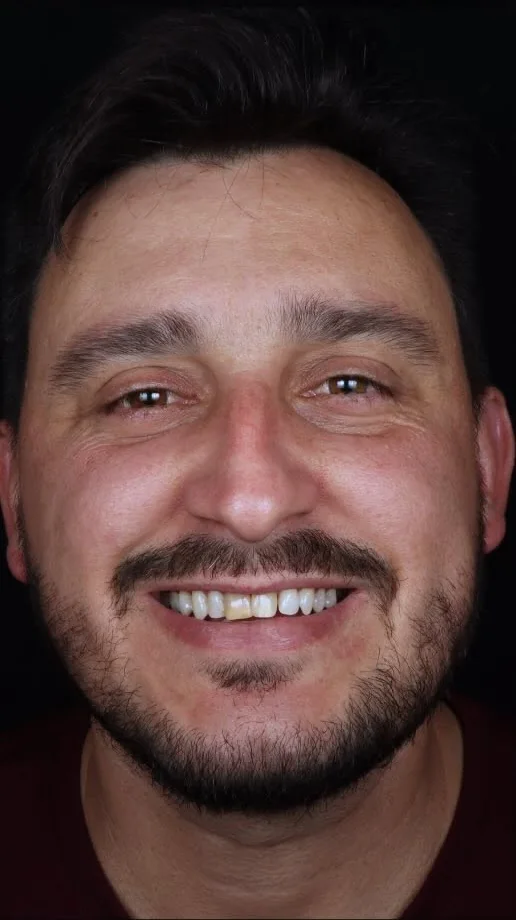
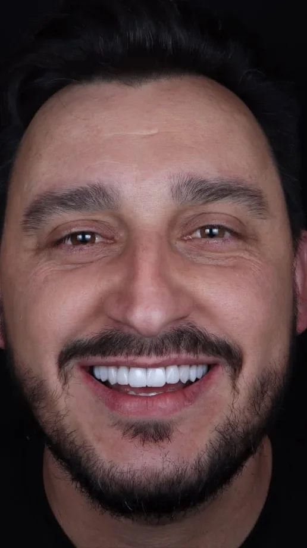

“Mais uma obra de arte.”
- Obra
- nº 01 da galeria
- Técnica
- 6 lentes de contato em porcelana e 6 facetas em resina nos dentes posteriores
- Cor
- BL2 MT
- Registro
- Publicado pela Dra. Nelzi em setembro de 2026
Arraste a linha para comparar. Resultados variam de pessoa para pessoa.